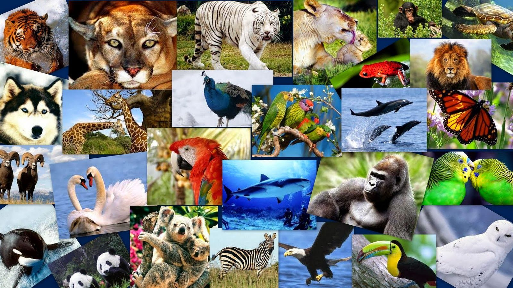

Bienvenidos a The WildGuard
Hola, somos una asociación que se dedica a la protección y el bienestar animal. Nuestro principal objetivo a rasgos generales es trabajar para la conservación y protección de especies amenazadas. Esto implica esfuerzos en la investigación, educación, sensibilización, rehabilitación y reintroducción de animales en su hábitat natural.
Funciones principales de The WildGuard
- Investigación y monitoreo: Esta asociación realiza estudios y monitoreos de las poblaciones de animales en peligro de extinción para comprender su situación actual, las amenazas que enfrentan y las medidas de conservación necesarias.
- Conservación de hábitats: Trabajamos para conservar y proteger los hábitats naturales de los animales en peligro de extinción, ya sea mediante la adquisición y administración de áreas protegidas, la promoción de prácticas de manejo sostenible de los recursos naturales o la restauración de hábitats degradados.
- Educación y concienciación: Intentamos educar al público para aumentar la conciencia sobre la importancia de la conservación de los animales en peligro de extinción. Esto generalmente lo realizamos a través de campañas de sensibilización, eventos educativos, talleres y material informativo.
En resumen, nuestra asociación de animales en peligro de extinción desempeña varias funciones con el objetivo de preservar y garantizar la supervivencia de estas especies amenazadas. Para ello nos gustaría pedirte tu ayuda para que entre todos logremos conseguirlo.¿Te gustaría unirte?
Fundadores de The WildGuard
Directora general y fundadora
Daniela Ambuludi
Daniela es una veterinaria experta amante de los animales,ella tuvo la idea de formar esta asociación
Subdirector de Atención a la Fauna
Jair Cedeño
Especialista en Salud Pública y Seguridad Social. Cuenta con experiencia en el sector farmacéutico
Subdirector de cultura ciudadana, gestión del conocimiento y tesorero
Alejandro Franco
Profesional altamente cualificado para las finanzas, gracias a el se han podido llevar a cabo todos los proyectos de la asociación.El controla todo el patrimonio de la asociación.